1ゲームの目的
まるくなったネコが、玄関から家の奥へどこまでも転がっていきます。
家具や動物をよけながら、キラキラ✨している物を続けてぶっ壊してコンボで高得点を狙い、どの部屋までたどり着けるかにチャレンジ！
ネコは自動で前に進みます。進むほどスピードが上がり、BGMもどんどん速くなります。
2操作方法
| パソコン | スマホ・タブレット | |
|---|---|---|
| 左右に移動 | ← → または A D マウスで左右にドラッグ | 画面を左右にドラッグ |
| ジャンプ | スペース / ↑ / クリック | 画面をタップ |
| BGM のオン・オフ | 画面右上の 🔊 ボタン | |
ジャンプすると「にゃお」と鳴きます。
3ネコの2つの姿
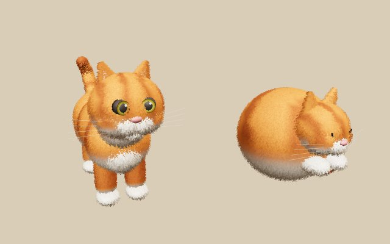
🟠 ボールの姿（床の上）
ふだんは丸まったボールになって床を転がります。
猫用扉は、この姿でしかくぐれません。
🐈 ネコの姿（ジャンプ中・家具の上）
ジャンプすると身体を大きく広げて、ネコの姿にもどります。
テーブルやイスの上に着地すると、その上をとことこ歩けます。
4壊せる物 ✨
キラキラ光っていて、足もとがほんのり明るい物は壊せます。ボールでもネコでも、当たればOK。1こ20点で、続けて壊すとコンボで最大100点になります。
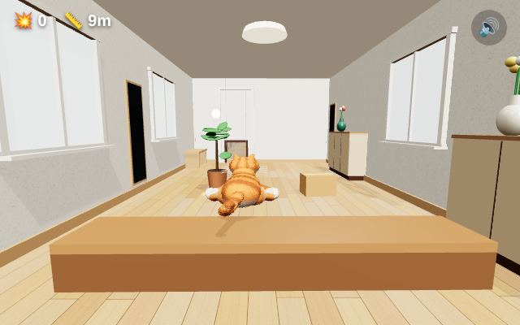
床に置いてある物
- 観葉植物
- 扇風機
- ルンバ（左右にうろうろ動く）
- 洗濯物（山・かご）
- 台の上の花瓶
テーブル・カウンターの上の物
- 花瓶・一輪挿し
- 金魚鉢
- 貯金箱
- 小さな観葉植物
- 食器・湯のみ・急須・マグカップ・ティーセット・果物かご
テーブルの上の物は、ジャンプしてテーブルに乗り、歩いてぶつかると壊せます。
5当たるとアウト（一発アウト）
ライフは1つだけ。次の物にぶつかったら、その場でゲームオーバーです。
据え置きの家具・物
- テーブル・ちゃぶ台・こたつ・座卓・ソファ・ベッド
- イス（ダイニングチェア・オフィスチェア・座椅子・ひじ掛け椅子）
- 段ボール・みかん箱・傘立て・掃除機・ワゴン
- 行灯・火鉢・屏風・フロアランプ・地球儀
動物・動くもの・壁
- 廊下で迫ってくる掃除機
- 茶の間の先輩ネコ
- 応接室の大きな犬
- 猫用扉のまわりの壁
6家具に乗る・乗り越える
テーブル・こたつ・座卓・ベッド・ソファ・イスなどは、ジャンプして上に乗れます。横からぶつかるとアウトですが、上からなら大丈夫。
ジャンプが少し低くても、家具のふちに届けばネコがよじのぼります。
通せんぼ家具
部屋の幅いっぱいに置かれた家具は、よけられません。ジャンプして乗り越えましょう。
- 玄関の上がり框（あがりかまち）
- 洋室の横向きのベッド
- キッチンのカウンター
7猫用扉をくぐって次の部屋へ
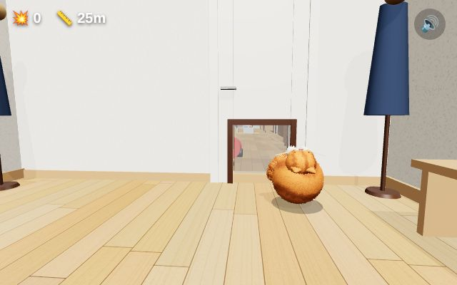
部屋のさかいめには壁があり、ドアや襖の下に猫用扉がついています。
- 自分で左右に動いて、扉の位置にねらいを合わせます。
- ボールの姿（床の上）でくぐります。ジャンプ中に当たると、扉の上の壁にゴツン！
- 扉から外れると壁にぶつかってアウトです。
扉の前と、くぐった直後には障害物はありません。最初の3枚の扉は広めです。落ち着いてねらいましょう。
8場面の順番
玄関 → 廊下 → 茶の間 → 縁側 → 和室 → 洋室 → 子ども部屋 → 書斎 → 秘密のホビールーム → キッチン → ホームバー → カラオケルーム → ビリヤード室 → 卓球ルーム → 煉瓦の暖炉部屋 → 洋風応接室 → 音楽室 → 室内花壇 → 屋根裏部屋 → アクアリウム室
20部屋目のアクアリウム室のあとは、廊下から2周目に入ります。全部で20の場面があります。
- 縁側：庭が見えるガラス戸。盆栽・蚊取り線香は壊せる。将棋盤に注意
- 子ども部屋：カラフルな床と二段ベッド。積み木の塔は壊せる。木馬・おもちゃ箱に注意
- 書斎：本棚だらけ。低い書架が通せんぼ。本の山に注意
- 秘密のホビールーム：書斎の本棚の隠し扉から入る。フィギュアは壊せる。鉄道模型の台に乗れる
- ホームバー：バーカウンターが通せんぼ。グラスやボトルは壊せる。バースツールに注意
- カラオケルーム：ミラーボールと大画面。タンバリン・マラカスは壊せる。マイクスタンド・スピーカーに注意
- ビリヤード室：ビリヤード台に乗れる。台の上のボールは壊せる。キュー立てに注意
- 卓球ルーム：卓球台に乗れる（横向きは通せんぼ）。ボールのかごは壊せる
- 煉瓦の暖炉部屋：レンガの壁と大きな暖炉。ランタン・置物は壊せる。薪の山・ロッキングチェアに注意
- 音楽室：グランドピアノに乗れる。メトロノームは壊せる。譜面台・チェロケースに注意
- 室内花壇：ガラス張りのサンルーム。植木鉢・じょうろは壊せる。レンガの花壇が通せんぼ
- 屋根裏部屋：傾いた屋根と梁。ランタンは壊せる。古いトランク・木箱の山・木馬に注意
- アクアリウム室（20部屋目）：魚が泳ぐ大水槽と青い光。金魚鉢・小さな水槽・えさ・サンゴは壊せる。水槽のふたの上を歩ける。泡の柱に注意
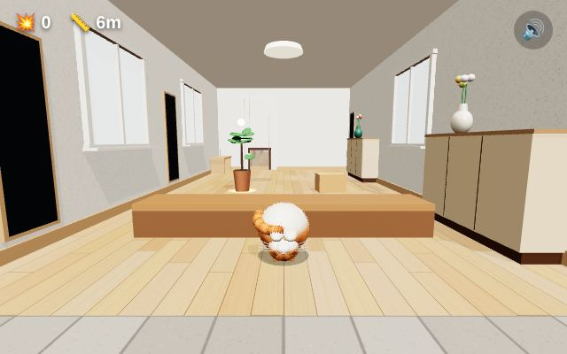
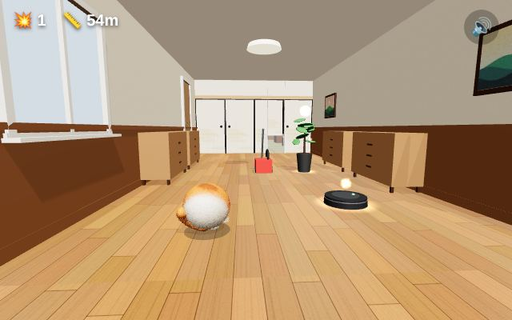
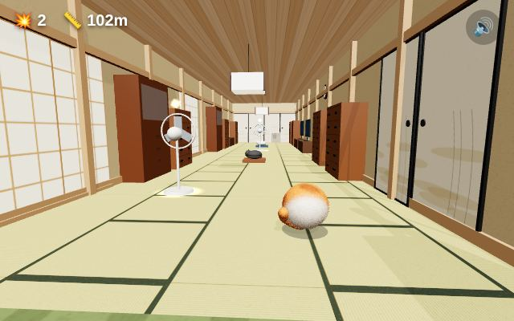
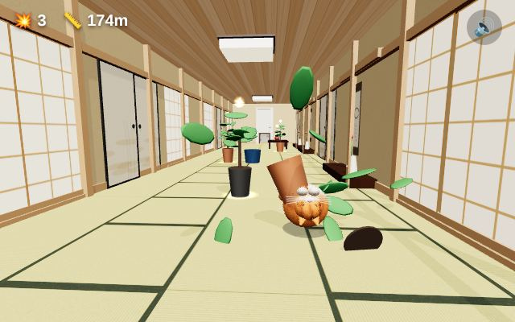
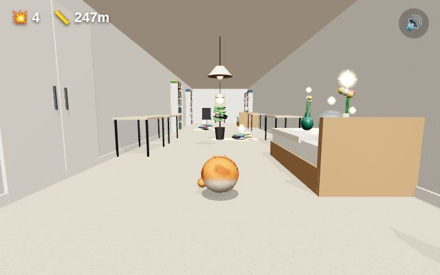
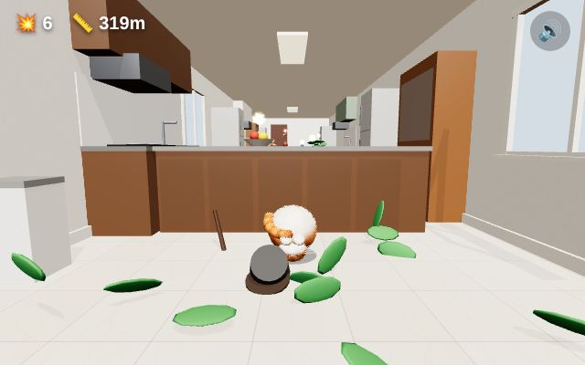
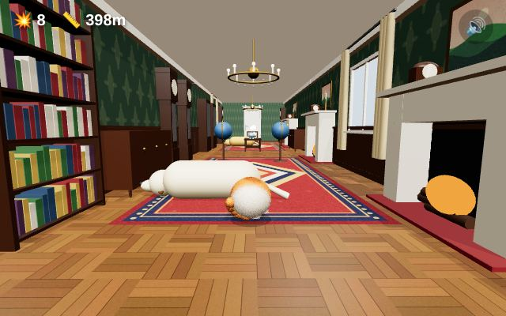
9部屋ごとの仕掛け
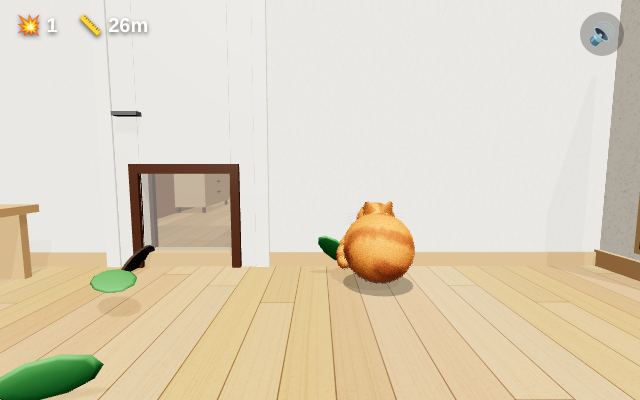
廊下：迫ってくる掃除機
こちらに向かってきます。1周目はまっすぐ来るだけですが、2周目からは左右にも追いかけてきます。よけるか、ジャンプで飛び越えましょう。
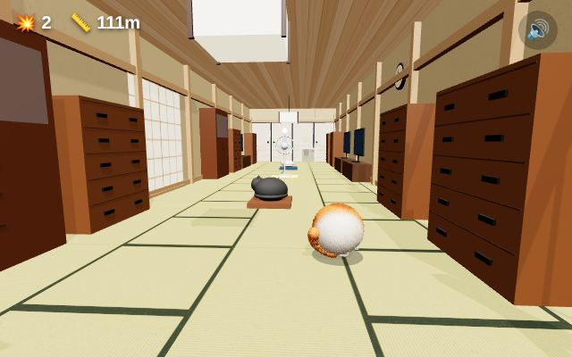
茶の間：寝ている先輩ネコ
ボールのまま近くを転がると、目をさまして「シャーッ」！毛を逆立てて大きくなります。ジャンプで静かに越えれば起きません。
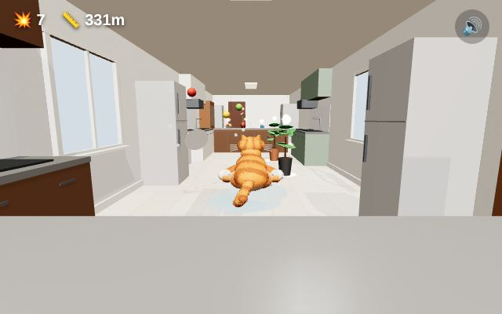
キッチン：濡れた床
こぼれた水の上をボールで通ると、横につるーっと滑って、しばらく操作できません。滑った先の障害物に注意！
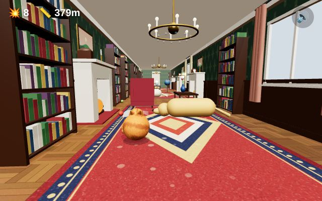
洋風応接室：寝ている大きな犬
部屋の片側で寝ています。ぶつかるとアウト。上を飛び越えると「ワン！」とほえます。
10スコア
スコア ＝ 進んだきょり(m) ＋ 壊した物の点数
連続こわし（コンボ）
壊してから2.5秒以内に次の物を壊すと、コンボがつながって点数の倍率が上がります。
| コンボ | 1こ目 | 2こ目 | 3こ目 | 4こ目 | 5こ目以降 |
|---|---|---|---|---|---|
| 1こあたりの点数 | 20点 | 40点（×2） | 60点（×3） | 80点（×4） | 100点（×5） |
コンボ中は画面の上に「3コンボ！ ×3」と残り時間のバーが出ます。危なくても壊しに行くと、一気に点数が伸びます。
到達部屋の記録
画面左上の 🚪 は、今何部屋目にいるかです。ゲームオーバー画面には「到達：和室（5部屋目）」のように表示され、これまでで一番遠くまで行けた部屋は「最高到達」として記録されます（2周目以降は「2周目のキッチン」のように表示）。
ベストスコアと最高到達は、ブラウザに保存されます。
BGM は運動会でおなじみの「天国と地獄」（オッフェンバック作曲）です。